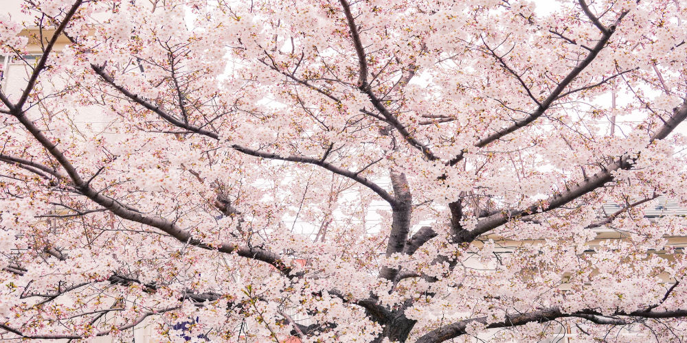

Primavera
A primavera é uma estação do ano. Essa estação é caracterizada por apresentar dias com temperaturas amenas, além disso, em algumas regiões, também ocorre a floração de diversas plantas. A primavera inicia-se logo após o inverno e encerra-se dando início à estação do verão.

A primavera é uma estação do ano. Essa estação é caracterizada por apresentar dias com temperaturas amenas, além disso, em algumas regiões, também ocorre a floração de diversas plantas. A primavera inicia-se logo após o inverno e encerra-se dando início à estação do verão.